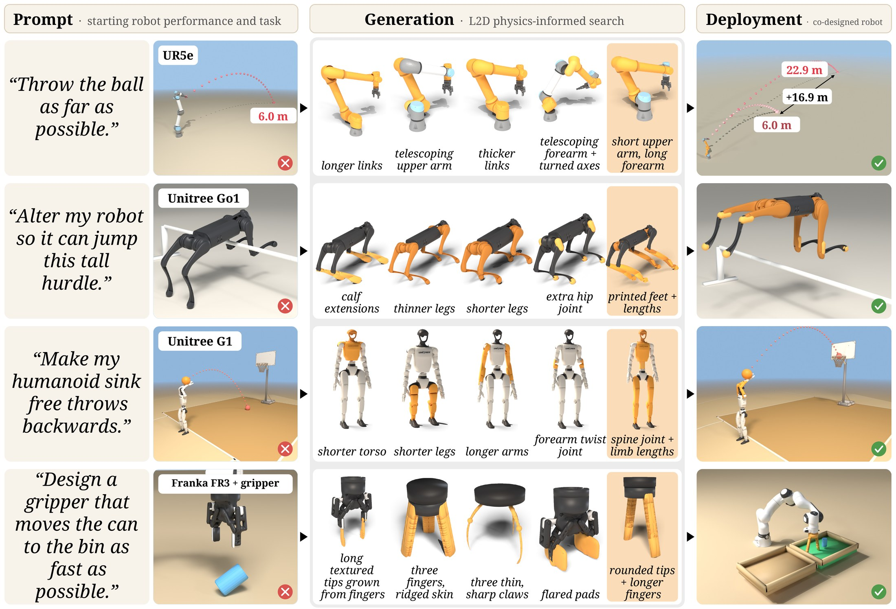
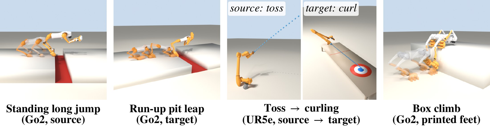

Designing a robot requires expertise in both complex mechanics and control. Adapting a robot to a task relies typically on slow cycles of guessing, prototyping and testing to find where design and behavior align. This raises a fundamental question: can robot design be made as simple as describing what we want a robot to do? We present Language to Design (L2D), a co-design framework that turns a prompt and an existing robot into an optimized body, a motion that performs the task, and manufacturable parts, without tuning or training per task or per robot. The framework supports 1) language proposals grounded in measured physics, where language reflection decides what to change and physics measured in simulation decides how much, 2) a continuous design space, spanning link kinematics, motors, added joints, and continuous morphology designs for contact points such as feet and fingers, and 3) real-world fabrication, where stress-based topology optimization turns added parts into light, manufacturable components deployed zero shot on hardware. We demonstrate L2D by co-designing quadrupeds, arms, grippers, dexterous hands, and humanoids across eleven tasks on nine robots, and deploy a printed design zero shot on a real quadruped for a climbing task.
Every clip below is the best design L2D found for the task, flown in MuJoCo on a held-out start, with the on-screen readout from the frozen task judge. Use vs. stock to see the same start flown by the unmodified robot side by side.
Five tasks on five robot families, each with its own design space.
A language-proposed Go1 with generated tripod feet, longer shanks and printed calf sleeves clears the 0.30 m board cleanly on 6 of 6 held-out starts and lands well past it.
A physics-guided edit of the arm's link geometry throws the ball 32 m on this start (the stock arm: 1.3 m), in lane on all 6 held-out starts. Ground markers every 5 m; inset: the arm close up.
A generated four-finger sliding gripper moves the can to the green bin and leaves it upright in about 2.9 s, on 6 of 6 held-out starts.
A G1 with rebalanced arm actuators sinks a backward whole-body throw through the hoop (made on 2 of 6 held-out starts).
The hardest task in the suite. The best design, a physics-guided fingertip edit, turns the pen a full turn on its best start and makes partial turns on the others.
Printed tread feet over the stock calves let the Go2 climb onto a 0.45 m box and stand on all four feet (5 of 6 starts); the stock Go2 does not. This is the design we fabricate for hardware.
Three tasks never seen while L2D was developed, run with the loop unchanged.
A redesigned gripper grips the hammer and drives the nail (3 of 6 held-out starts); the stock gripper never strikes it. Shown with a smoothed, speed-limited controller that still passes.
The co-designed arm flicks the stone before the line and it comes to rest in the house, on the ice (the best of 6 held-out starts); the stock arm's stone stops short.
A co-designed ANYmal C scrambles over loose rocks to the mark (all 6 held-out starts). The stock robot also succeeds here, so this task shows generality rather than a gain.
Designs found on one task seed the first round of a new run on a related task, on the same robot.
A design found on the pit-leap task, dropped into the long-jump run, clears the long jump on all 6 starts as the loop's very first proposal.
Seeded from a long-jump design library, a Go2 runs up and leaps the lava pit (2 of 6 starts).
The source run: a co-designed Go2 clears the long-jump pit from a standing start (5 of 6 starts); the stock Go2 never does.
Starting from a library of tossing designs, the loop finds an arm that curls the stone to rest inside the house.
